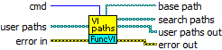

Owning Palette: FuncVI Service
The VI can be used to extend a set of paths used by CalcExpress to search for FuncVIs.
CalcExpress dynamically calls FuncVI functions. To call a FuncVI, CalcExpress needs to know a location of the FuncVI to open a VI reference to it. To find out a FuncVI CalcExpress uses a set of search paths. The set includes predefined paths that refer to FuncVI libraries supplied with CalcExpress. Furthermore, this VI lets you define additional paths to search for FuncVIs (user-defined paths).
 |
Click the parameters for more information |